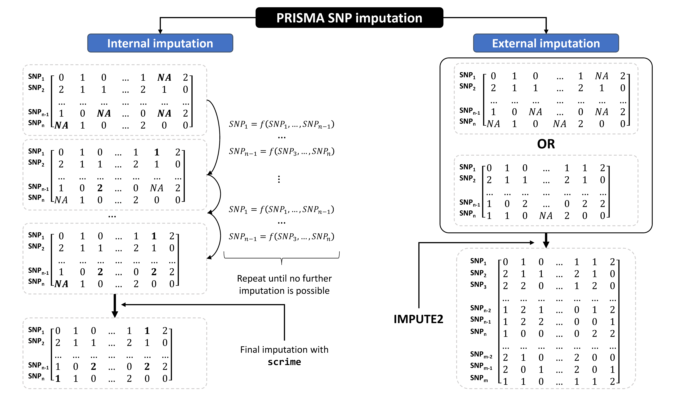
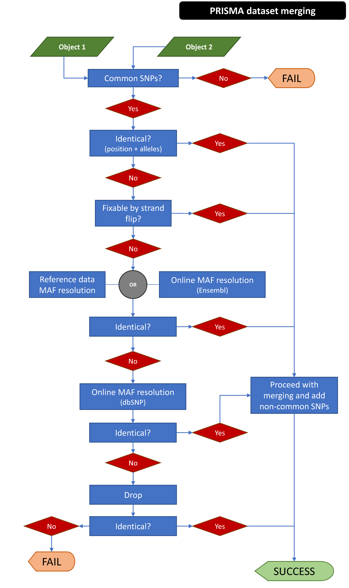

Imputation of missing genotypes, genotype extension and dataset merging
Panagiotis Moulos
2022-06-03
Source:vignettes/05-imputemerge.Rmd
05-imputemerge.RmdSNP imputation in PRISMA
PRISMA offers functions to perform SNP genotype imputation at two levels. The first level is imputation of missing genotypes, for completeness of a dataset as many GWA tests do not operate with missing values. This is different from SNP imputation based on a large reference panel such as a population study (e.g. the 1000 genomes project). We refer to this imputation level as internal imputation. The second level is the imputation based on an external reference panel (as mentioned before). In this case, the genotypes are both imputed (in the case of missing data) and extended to infer SNPs and other variants not present in the initial dataset, based on the content of the initial dataset and sophisticated regression algorothims which use the reference panel and the actual dataset content to enrich the initial dataset with inferred SNPs with usually good accuracy. We refer to this level of imputation as external imputation or extension.
To achieve the two types of imputation PRISMA utilizes:
- For internal imputation, it implements a sequential imputation procedure based on the
snp.imputefunction of the package snpStats, followed by genotype imputation with the package scrime for SNPs that fail to be imputed. - For external imputation, it wraps the IMPUTE2 algorithm and extends the
gfeaturesslot of the initialGWASExperimentobject with the INFO score returned by IMPUTE2 and can be used to assess the quality of the extended genotypes and filter accordingly.
Internal imputation
As mentioned, internal imputation in PRISMA is performed by implementing a sequential imputation process using functions from the snpStats package. Therefore, the imputation can be performed in two possible ways:
- Imputing with imputation rules based on the total dataset with or without missing values (
mode="single"). Rules are created based on all SNPs in the dataset even if there are some missing values (snpStats takes care of that). - Imputing with spliting the dataset to a part with non-missing genotypes which is used to create the imputation rules (mode="split"), which are then applied on the dataset part with the missing values.
Even though case (ii) may be more accurate, it is often non-applicable to smaller datasets where it is unlikely to find samples with no missing values at all. Case (ii) could also be applied with an external reference panel to add SNPs not genotyped in the initial dataset (another external imputation process) which is not implemented within PRISMA at this point.
All the functionalities are wrapped with the imputeGWAS() function which operates on a GWASExperiment object. Below, we are using again the toy dataset included with PRISMA and we will artificially add a few missing values to demostrate case (i) (mode="single"):
data(toy,package="prisma")
# Make some genotypes missing
set.seed(42)
toMiss <- lapply(seq_len(ncol(toy)),function(j) {
n <- sample(20,1)
miss <- logical(nrow(toy))
miss[sample(nrow(toy),n)] <- TRUE
return(miss)
})
G <- as(genotypes(toy),"numeric") + 1
mode(G) <- "integer"
for (j in seq_len(ncol(toy)))
G[toMiss[[j]],j] <- 0L
G <- SnpMatrix(G)
## coercing object of mode numeric to SnpMatrix
genotypes(toy) <- G
toyI <- imputeGWAS(toy,fail="none")
##
## Imputing missing values with snpStats rules
##
## Starting imputation analysis in 2 chunks
##
## ========== Imputing chromosome/part 18
## -----> Imputation iteration 1
## Creating imputation rules
## SNPs tagged by a single SNP: 45
## SNPs tagged by multiple tag haplotypes (saturated model): 537
## 97 samples have missing genotypes in 433 SNPs in total.
## Imputing...
## Applying imputations...
## -----> Imputation iteration 2
## Creating imputation rules
## SNPs tagged by a single SNP: 44
## SNPs tagged by multiple tag haplotypes (saturated model): 538
## 52 samples have missing genotypes in 47 SNPs in total.
## Imputing...
## Applying imputations...
##
## ========== Imputing chromosome/part 21
## -----> Imputation iteration 1
## Creating imputation rules
## SNPs tagged by a single SNP: 20
## SNPs tagged by multiple tag haplotypes (saturated model): 301
## 92 samples have missing genotypes in 221 SNPs in total.
## Imputing...
## Applying imputations...
## -----> Imputation iteration 2
## Creating imputation rules
## SNPs tagged by a single SNP: 20
## SNPs tagged by multiple tag haplotypes (saturated model): 301
## 27 samples have missing genotypes in 17 SNPs in total.
## Imputing...
## Applying imputations...
##
## Imputation finished, re-merging the output
before <- length(which(is.na(genotypes(toy))))
after <- length(which(is.na(genotypes(toyI))))
before > after # TRUE
## [1] TRUEThe imputation process can be parallelized with the rc argument passed to the imputeGWAS() function. The fail argument controls what to do with genotypes that failed to be imputed with the snpStats imputation rules. They either remain missing (fail="none") or they are further imputed with the k-Nearest Neighbor algorithm implemented in the package scrime (fail="scrime"). It should be noted that some form of imputation must be performed prior to GWA tests and PRS analysis as many algorithms do not handle missing genotypes.
Also, internal imputation is part of the filtering process so as to procude objects ready for GWA testing. It can be turned off by setting imputeMissing=FALSE in the filterGWAS() function. This should be the case when playing with filters to bring data to acceptable form for later analysis.
External imputation
As mentioned, external imputation in PRISMA refers to the extension of the dataset (e.g. SNP microarray) content with SNPs and other variants that do not exist in it, based on an external larger reference population panel such as the variants listed within the 1000 Genomes Project. This process is called imputation in the related literature but within PRISMA and in order to distinguish it from missing genotype imputation, we refer to it as extension or external imputation.
To perform external imputation PRISMA needs:
- The IMPUTE2 software
- The IMPUTE2 reference panel files
- The GTOOL or QCTOOL tools for file conversion operations.
IMPUTE2 by default imputes SNPs over shorter intervals and not over chromosomes. Briefly, the extendGWAS() function:
- Converts and exports the input
GWASExperimentobject to files that IMPUTE2 can understand - Creates the imputation intervals over the chromosomes present in the initial object
- Paralelly (if possible) executes IMPUTE2 over the imputation intervals
- Merges the produced files per chromosome and converts to PLINK format so that they can be read back to a
GWASExperiment - Creates a merged and extended
GWASExperimentobject with the imputed SNPs and adds the imputationINFOscore (imputation accuracy) to thegfeaturesof the object - Cleans up
The following will perform imputation with writing intermediate files to a temporaray folder without removing intermediate files:
data(toy,package="prisma")
refSpace <- "PATH/TO/IMPUTE2/REFERENCE/PANEL"
toyEx <- extendGWAS(toy,refSpace=refSpace)The following will perform imputation with writing intermediate files to a. user specified folder, using QCTOOL as conversion tool and leaving some intermediate files back:
data(toy,package="prisma")
refSpace <- "PATH/TO/IMPUTE2/REFERENCE/PANEL"
wspace <- "PATH/TO/WORKSPACE"
toyEx <- extendGWAS(toy,wspace=wspace,refSpace=refSpace,convTool="qctool",
cleanup="intemediate")The following will perform imputation over intervals of 10Mbp (default is 1Mbp):
data(toy,package="prisma")
refSpace <- "PATH/TO/IMPUTE2/REFERENCE/PANEL"
toyEx <- extendGWAS(toy,intSize=1e+7,refSpace=refSpace)The two conversion tools, GTOOL and QCTOOL are both supported because GTOOL may not be compatible with some later Linux versions (e.g. > Ubuntu 18.04). Generally, the process may require many hours to complete (especially for complete datasets) so it would be better to put the command in a script and run the command in the background with Rscript.
The following figure summarizes the imputation modes in PRISMA:

Dataset merging
With PRISMA, it is possible to merge two genotype datasets, for example datasets derived from different array platforms or different versions of the same platform or different arrays from the same provider. Merging is not a straigh-forward process as there are several factors - apart from the obvious which is non-common SNPs - such as reversed alleles, multiallelic SNPs with no sufficient representation of mixes in major and minor alleles between different datasets. Although there is software dedicated to the merging and harmonization of different datasets (for example Genotype Harmonizer), PRISMA facilitates also this process by offering a simple GWASExperiment merging function so that users do not have to use multiple packages and complex I/O operations. The merging process is explained below.
Prerequisites
Generally, some prerequisites are assumed prior to merging:
- The human genome versions of the two object to be merged must be the same. Use the
guessHumanGenomeVersion()andGWASExperimentLiftOver()functions to check and fix such issues where possible. - The SNP ids from each dataset must be in a common reference format. Ideally, the ids should be converted to dbSNP ids prior to any processing, as in this way the merging process can use online resources to resolve issues. Other ids are also possible like Illumina GSA ids, but online resolving resources cannot be used.
- SNP locations must be available.
Merging process
This process is also described in the man page of the mergeGWAS() function.
The following figure summarizes the imputation modes in PRISMA:

Common SNPs
If the two datasets are compatible in terms of genome version and coordinates, the common SNPs are then identified between the two datasets. As these must point to the same information (location, minor and major alleles, same strand), the process then checks these attributes and tries to resolve any discrepancies.
The first check is whether non identical SNPs in terms of alleles can be solved with strand-fliping. Those that cannot be resolved with strand-fliping may not point to the same risk allele. This is resolved either by using one dataset as a reference (mafResolve=1 or mafResolve=2) or even better, by querying online resources (e.g. Ensembl and dbSNP) to identify the true minor and major alleles based on summarized frequencies from population studies (there should be an internet connection for this). SNPs whose alleles cannot be resolved by any means (strand-flip, online MAF resolve) are completely dropped.
If the common SNPs between the two objects continue not being identical, it probably means that there are location/position mismatches potentially derived from older annotations. These can only be resolved online. If after this there are any remaining non-resolvable SNPs, they are dropped. Then, the genotypes of common SNPs are merged. The genotypes of the alleles that were flipped are also switched.
Finally, the common annotation elements and genotypes are combined. If output="common" the process stops. If output="all", the unique elements of each dataset are also combined with the common. The genotypes of SNPs unique to each dataset are set to missing.
With respect to the online allele resolving of the common SNPs that cannot be resolved with strand-flipping:
- SNPs are queried to Ensembl with biomaRt to resolve allele frequencies. Genome version is not importantat this point as only alleles are used together with SNP IDs.
- If minor allele is available from Ensembl, then the flip decision is based on it. If not (e.g. outdated/merged SNPs, dbSNP is queried with package rsnps and completes the Ensembl result.
- Some SNPs may have been removed from dbSNP. Nothing can be done for these. Flipping for these will be based on the majority of the rest.
- Some found SNPs may not have information on MAF and minor alleles. dbSNP is requeried with rsnps and filling missing info is retried. Again, some will not be resolved and will be flipped according to majority.
Common SNPs that fail to be resolved in any of the aforementioned ways are dropped from the merged dataset.
Non-common SNPs
With non common SNPs the process is easier as there is nothing to resolve. Non-common samples, SNPs and genotypes are appended to the common ones to form a final dataset. The genotypes of SNP that are unique to the first dataset are set to missing for the samples in the second dataset and vice-versa for SNPs unique to the second dataset. It is normal that this process produces many missing values. Internal imputation can be used to salvage some samples and SNPs from filtering. There is also the option to output only common SNPs to avoid having extreme numbers of missing values in the final dataset. This is to be decided by the user based on the nature of the datasets to be merged.
R session info
## R version 4.1.3 (2022-03-10)
## Platform: x86_64-pc-linux-gnu (64-bit)
## Running under: Ubuntu 18.04.6 LTS
##
## Matrix products: default
## BLAS: /usr/lib/x86_64-linux-gnu/blas/libblas.so.3.7.1
## LAPACK: /usr/lib/x86_64-linux-gnu/lapack/liblapack.so.3.7.1
##
## locale:
## [1] LC_CTYPE=en_US.UTF-8 LC_NUMERIC=C
## [3] LC_TIME=en_US.UTF-8 LC_COLLATE=en_US.UTF-8
## [5] LC_MONETARY=en_US.UTF-8 LC_MESSAGES=en_US.UTF-8
## [7] LC_PAPER=en_US.UTF-8 LC_NAME=C
## [9] LC_ADDRESS=C LC_TELEPHONE=C
## [11] LC_MEASUREMENT=en_US.UTF-8 LC_IDENTIFICATION=C
##
## attached base packages:
## [1] stats4 stats graphics grDevices utils datasets methods
## [8] base
##
## other attached packages:
## [1] prisma_0.0.1 SNPRelate_1.28.0
## [3] gdsfmt_1.30.0 snpStats_1.44.0
## [5] Matrix_1.4-1 survival_3.3-1
## [7] SummarizedExperiment_1.24.0 Biobase_2.54.0
## [9] GenomicRanges_1.46.1 GenomeInfoDb_1.30.1
## [11] IRanges_2.28.0 S4Vectors_0.32.4
## [13] BiocGenerics_0.40.0 MatrixGenerics_1.6.0
## [15] matrixStats_0.62.0 lassosum_0.4.5
##
## loaded via a namespace (and not attached):
## [1] utf8_1.2.2
## [2] R.utils_2.11.0
## [3] tidyselect_1.1.2
## [4] gwascat_2.26.0
## [5] RSQLite_2.2.14
## [6] AnnotationDbi_1.56.2
## [7] grid_4.1.3
## [8] BiocParallel_1.28.3
## [9] munsell_0.5.0
## [10] codetools_0.2-18
## [11] ragg_1.2.2
## [12] future_1.25.0
## [13] quincunx_0.1.4
## [14] islasso_1.4.3
## [15] colorspace_2.0-3
## [16] filelock_1.0.2
## [17] OrganismDbi_1.36.0
## [18] highr_0.9
## [19] knitr_1.39
## [20] rstudioapi_0.13
## [21] robustbase_0.95-0
## [22] TTR_0.24.3
## [23] listenv_0.8.0
## [24] optparse_1.7.1
## [25] GenomeInfoDbData_1.2.7
## [26] bit64_4.0.5
## [27] rprojroot_2.0.3
## [28] parallelly_1.31.1
## [29] vctrs_0.4.1
## [30] generics_0.1.2
## [31] xfun_0.31
## [32] BiocFileCache_2.2.1
## [33] R6_2.5.1
## [34] rmdformats_1.0.3
## [35] bitops_1.0-7
## [36] cachem_1.0.6
## [37] DelayedArray_0.20.0
## [38] assertthat_0.2.1
## [39] gwasrapidd_0.99.12
## [40] BiocIO_1.4.0
## [41] Homo.sapiens_1.3.1
## [42] scales_1.2.0
## [43] gtable_0.3.0
## [44] globals_0.15.0
## [45] rlang_1.0.2
## [46] systemfonts_1.0.4
## [47] splines_4.1.3
## [48] rtracklayer_1.54.0
## [49] rsnps_0.5.0.0
## [50] sitadela_1.3.1
## [51] BiocManager_1.30.16
## [52] yaml_2.3.5
## [53] reshape2_1.4.4
## [54] GenomicFeatures_1.46.5
## [55] quantmod_0.4.20
## [56] RBGL_1.70.0
## [57] tools_4.1.3
## [58] lava_1.6.10
## [59] bookdown_0.26
## [60] liftOver_1.18.0
## [61] ggplot2_3.3.5
## [62] ellipsis_0.3.2
## [63] kableExtra_1.3.4
## [64] jquerylib_0.1.4
## [65] Rcpp_1.0.8.3
## [66] rrBLUP_4.6.1
## [67] plyr_1.8.7
## [68] progress_1.2.2
## [69] zlibbioc_1.40.0
## [70] purrr_0.3.4
## [71] RCurl_1.98-1.6
## [72] prettyunits_1.1.1
## [73] cowplot_1.1.1
## [74] zoo_1.8-10
## [75] fs_1.5.2
## [76] crul_1.2.0
## [77] magrittr_2.0.3
## [78] data.table_1.14.2
## [79] openxlsx_4.2.5
## [80] mvtnorm_1.1-3
## [81] survcomp_1.44.1
## [82] hms_1.1.1
## [83] evaluate_0.15
## [84] XML_3.99-0.9
## [85] RMTstat_0.3.1
## [86] shape_1.4.6
## [87] compiler_4.1.3
## [88] biomaRt_2.50.3
## [89] tibble_3.1.7
## [90] KernSmooth_2.23-20
## [91] crayon_1.5.1
## [92] R.oo_1.24.0
## [93] htmltools_0.5.2
## [94] pcaPP_2.0-1
## [95] tzdb_0.3.0
## [96] rrcov_1.7-0
## [97] DBI_1.1.2
## [98] SuppDists_1.1-9.7
## [99] dbplyr_2.1.1
## [100] MASS_7.3-56
## [101] rappdirs_0.3.3
## [102] PhenotypeSimulator_0.3.4
## [103] getopt_1.20.3
## [104] readr_2.1.2
## [105] rmeta_3.0
## [106] cli_3.3.0
## [107] quadprog_1.5-8
## [108] R.methodsS3_1.8.1
## [109] parallel_4.1.3
## [110] pkgconfig_2.0.3
## [111] TxDb.Hsapiens.UCSC.hg19.knownGene_3.2.2
## [112] pkgdown_2.0.3.9000
## [113] GenomicAlignments_1.30.0
## [114] signal_0.7-7
## [115] xml2_1.3.3
## [116] foreach_1.5.2
## [117] svglite_2.1.0
## [118] bslib_0.3.1
## [119] webshot_0.5.3
## [120] XVector_0.34.0
## [121] prodlim_2019.11.13
## [122] rvest_1.0.2
## [123] stringr_1.4.0
## [124] VariantAnnotation_1.40.0
## [125] digest_0.6.29
## [126] graph_1.72.0
## [127] httpcode_0.3.0
## [128] Biostrings_2.62.0
## [129] rmarkdown_2.14
## [130] harmonicmeanp_3.0
## [131] restfulr_0.0.13
## [132] curl_4.3.2
## [133] Rsamtools_2.10.0
## [134] rjson_0.2.21
## [135] tseries_0.10-51
## [136] lifecycle_1.0.1
## [137] jsonlite_1.8.0
## [138] survivalROC_1.0.3
## [139] desc_1.4.1
## [140] viridisLite_0.4.0
## [141] BSgenome_1.62.0
## [142] fansi_1.0.3
## [143] pillar_1.7.0
## [144] lattice_0.20-45
## [145] DEoptimR_1.0-11
## [146] KEGGREST_1.34.0
## [147] fastmap_1.1.0
## [148] httr_1.4.3
## [149] GO.db_3.14.0
## [150] xts_0.12.1
## [151] glue_1.6.2
## [152] zip_2.2.0
## [153] SNPlocs.Hsapiens.dbSNP151.GRCh38_0.99.20
## [154] png_0.1-7
## [155] iterators_1.0.14
## [156] pander_0.6.5
## [157] glmnet_4.1-4
## [158] bit_4.0.4
## [159] stringi_1.7.6
## [160] sass_0.4.1
## [161] bootstrap_2019.6
## [162] blob_1.2.3
## [163] statgenGWAS_1.0.8
## [164] textshaping_0.3.6
## [165] org.Hs.eg.db_3.14.0
## [166] memoise_2.0.1
## [167] FMStable_0.1-2
## [168] dplyr_1.0.8
## [169] future.apply_1.9.0